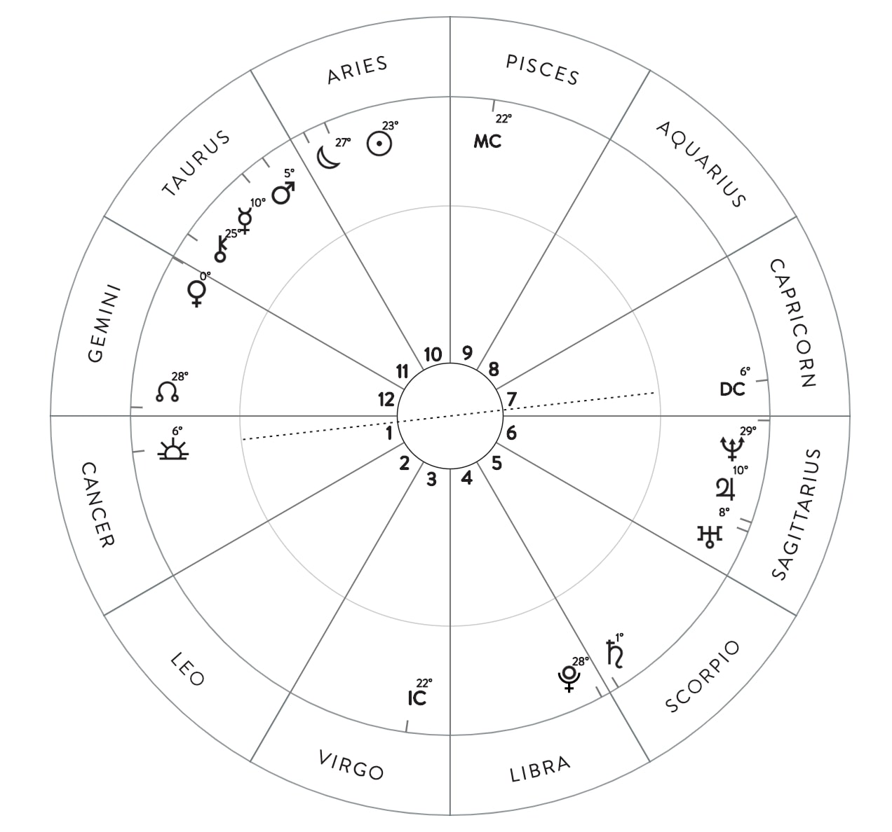

A natal chart also known as a birth chart contains all the placements of the planets and stars the exact time and day of your birth. As seen on the left it is usually in the shape of a circle. It contains the numbers 1-12 which represent houses. Each sign represents a house. Since the 1 is on the sign Cancer, this person's first house is in Cancer. The symbols all over the circle represent different planets and where the person has signs. Since there are alot of planet symbols clustered around Taurus and Sagittarius, this means that this person has a lot of Taurus and Sagittarius placements.
Natal Chart
